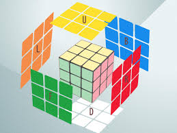
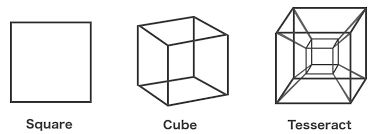
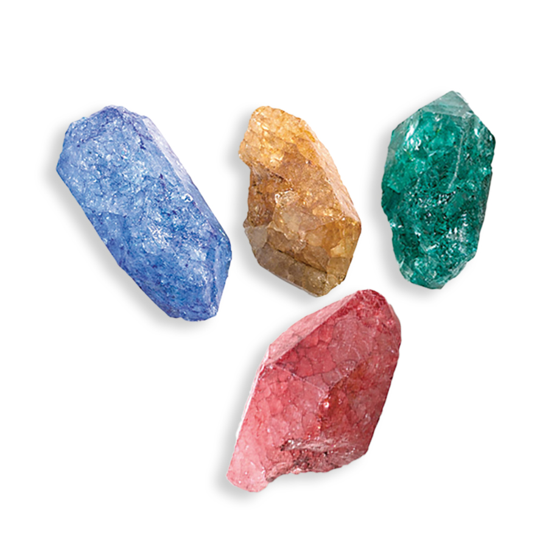
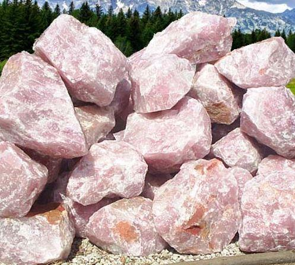
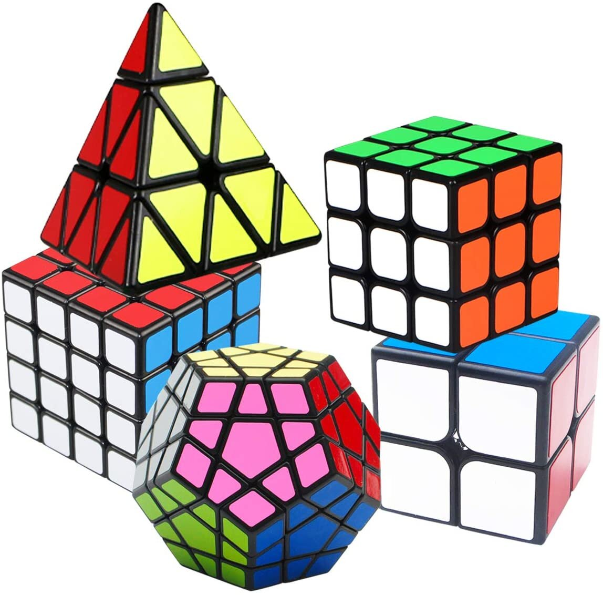

Colour System
Introduction
Let's Paint A Picture
Shape Tier :
Triangle = Fractions - Barter / Fall On Your Sword / Oath = Center Hand Over Stone
Square = Wholes [Pieces] Of A Whole / Teir Levels - Pieces [Sets] / Whole - Warships [Future Planning - Trick Or Treat ]
Pentagon = ????
Hexagon = ????
Octagon = ????
Stars = Symbolic Value / Math Value = Equation = Carving Of The STONE

Colour Code Them :
Teirs = Make Standard = For Longivity = Whole Value Up With Colour = Later Expansion Of Energy & Law Trade = Economic Ladder
Creating A Bridge To Shippment Port = Medium Of Exchange At Port = Value & Treasury = Bond = Future Advance Battery Able To Move Through Land = Infustructure / ROAD
Debate : Which Colours From Base To Top = In Chain Of Expansion = Colour Value = Will Mirror Greater Expansion & Value Incease In Time = Banking Interest Fuction
Lesson On Stone / : / Check Chapeter]

Cut Stone = To 4 Piece = Open / Expansion Of Market = People Can Save In Different Value Asset Forms & Colours = Wealth Incease = For Moving Freedom = Exchange Of Good & Service

Cut The Stone = Mass Produce = Flood Market = Watch Exchange Of Good = Example = Underground / Earth / Heaven = Ganja [Marijuana = Marry Joy Ana {..Slience..} = What This Plants Name ?(20 Century Joke In Language)?] Crop / STONE / Market

For WAR Machines = At The Ports & Global Trading = Global Accepated Forms Of Exchange = Future Plans = Advanced Battery Movement = New Levels = New Weapons = New Medical Treatment = etc....... = Cause & Effect
